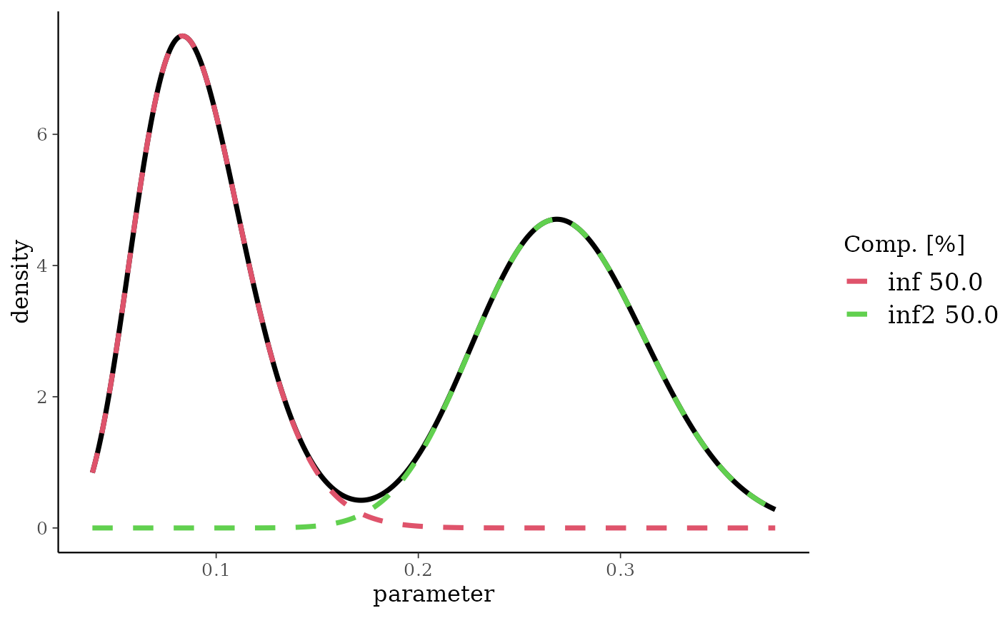
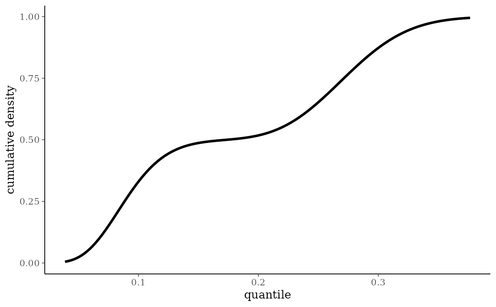
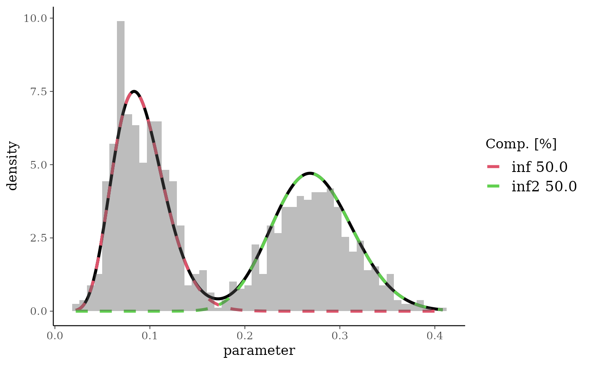
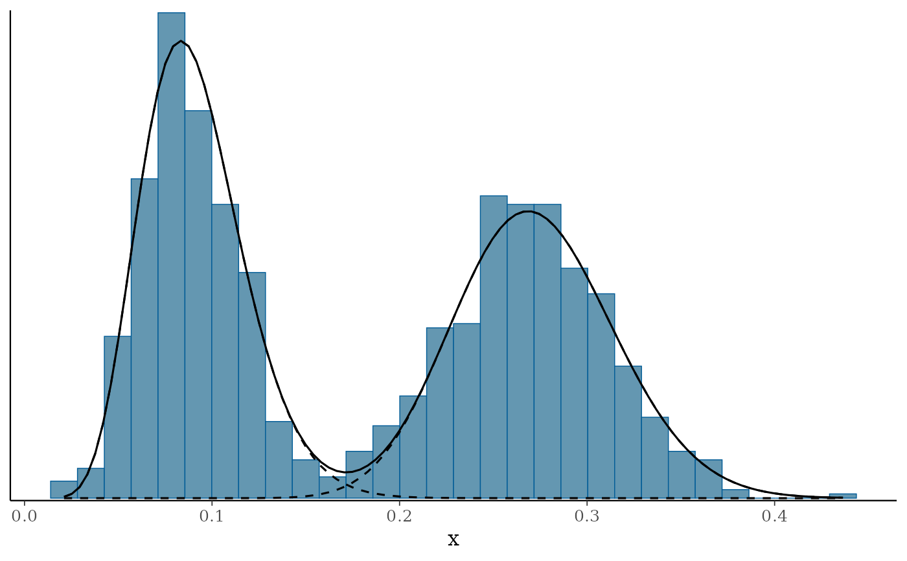
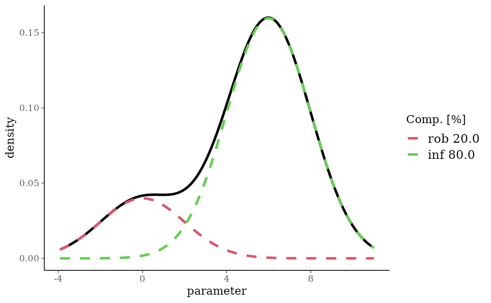
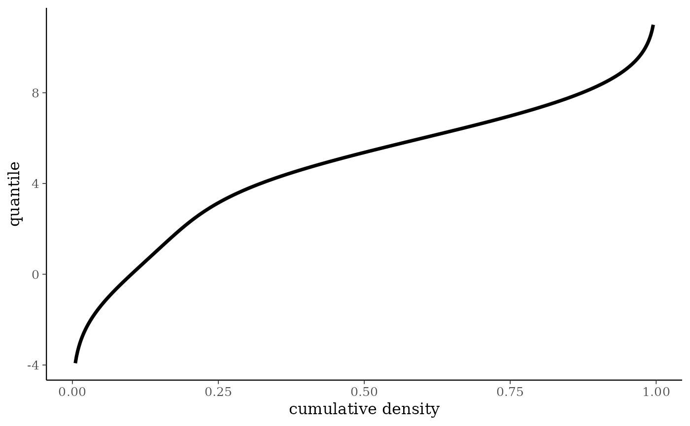
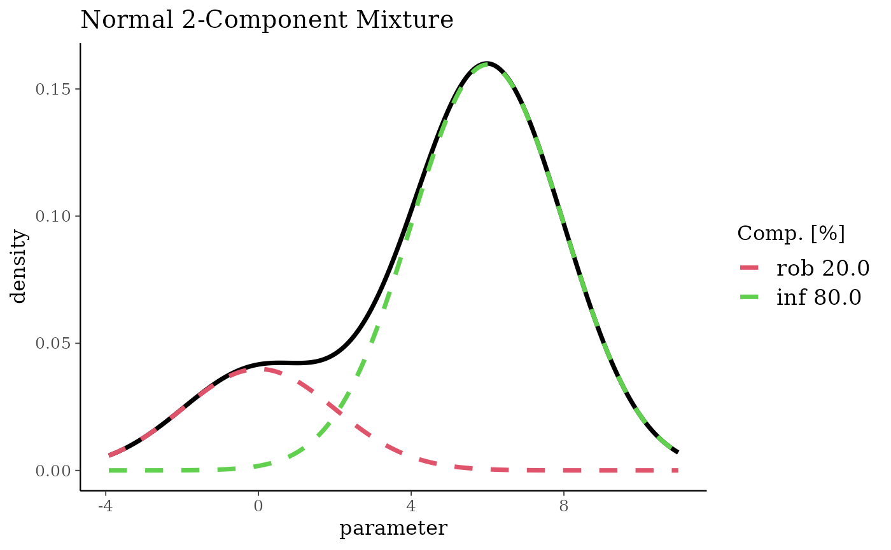

Plotting for mixture distributions
Arguments
- x
mixture distribution
- prob
defining lower and upper percentile of x-axis. Defaults to the 99\% central probability mass.
- fun
function to plot which can be any of
dmix,qmixorpmix.- log
log argument passed to the function specified in
fun.- comp
for the density function this can be set to
TRUEwhich will display colour-coded each mixture component of the density in addition to the density.- size
controls the linesize in plots.
- ...
extra arguments passed on to the plotted function.
Value
A ggplot2::ggplot() object is returned.
Details
Plot function for mixture distribution objects. It shows
the density/quantile/cumulative distribution (corresponds to
d/q/pmix function) for some specific central probability
mass defined by prob. By default the x-axis is chosen to
show 99\% of the probability density mass.
Customizing ggplot2 plots
The returned plot is a ggplot2 object. Please refer to the
"Customizing Plots" vignette which is part of RBesT
documentation for an introduction. For simple modifications (change
labels, add reference lines, ...) consider the commands found in
bayesplot-helpers. For more advanced
customizations please use the ggplot2 package directly. A
description of the most common tasks can be found in the
R Cookbook and a full
reference of available commands can be found at the
ggplot2 documentation
site.
Examples
# beta with two informative components
bm <- mixbeta(inf = c(0.5, 10, 100), inf2 = c(0.5, 30, 80))
plot(bm)

plot(bm, fun = pmix)

# for customizations of the plot we need to load ggplot2 first
library(ggplot2)
# show a histogram along with the density
plot(bm) + geom_histogram(
data = data.frame(x = rmix(bm, 1000)),
aes(y = ..density..), bins = 50, alpha = 0.4
)
#> Warning: The dot-dot notation (`..density..`) was deprecated in ggplot2 3.4.0.
#> ℹ Please use `after_stat(density)` instead.
#> ℹ The deprecated feature was likely used in the RBesT package.
#> Please report the issue at <https://github.com/Novartis/RBesT/issues>.

# \donttest{
# note: we can also use bayesplot for histogram plots with a density ...
library(bayesplot)
mh <- mcmc_hist(data.frame(x = rmix(bm, 1000)), freq = FALSE) +
overlay_function(fun = dmix, args = list(mix = bm))
# ...and even add each component
for (k in 1:ncol(bm)) {
mh <- mh + overlay_function(fun = dmix, args = list(mix = bm[[k]]), linetype = I(2))
}
print(mh)
#> `stat_bin()` using `bins = 30`. Pick better value with `binwidth`.

# }
# normal mixture
nm <- mixnorm(rob = c(0.2, 0, 2), inf = c(0.8, 6, 2), sigma = 5)
plot(nm)

plot(nm, fun = qmix)

# obtain ggplot2 object and change title
pl <- plot(nm)
pl + ggtitle("Normal 2-Component Mixture")
